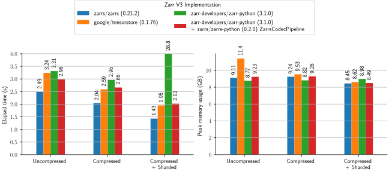
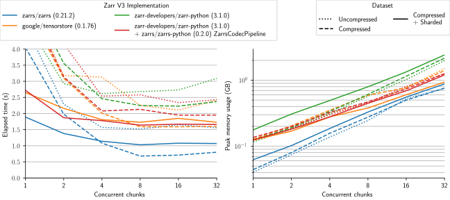

Zarr Benchmarks
This repository contains benchmarks of Zarr V3 implementations.
[!NOTE] Contributions are welcomed for additional benchmarks, more implementations, or otherwise cleaning up this repository.
Also consider restarting development of the official zarr benchmark repository: https://github.com/zarr-developers/zarr-benchmark
Implementations Benchmarked
LDeakin/zarrsv0.17.0 (Rust 1.81.0) viaLDeakin/zarrs_tools0.6.0 (4beba5f)- Benchmark executable (read): zarrs_benchmark_read_sync
- Benchmark executable (round trip): zarrs_benchmark_read_sync
google/tensorstorev0.1.67 (Python 3.12.5)- Benchmark script (read): scripts/tensorstore_python_benchmark_read.py
- Benchmark script (round trip): scripts/tensorstore_python_benchmark_roundtrip.py
zarr-developers/zarr-python3.0.0b1 (Python 3.12.5)- Benchmark script (read): scripts/zarr_python_benchmark_read.py
- Benchmark script (roundtrip): scripts/zarr_python_benchmark_roundtrip.py
[!WARNING] Python benchmarks (
tensorstoreandzarr-python) are subject to the overheads of Python and may not be using an optimal API/parameters.Please open a PR if you can improve these benchmarks.
make Targets
pydeps: install python dependencies (recommended to activate a venv first)zarrs_tools: installzarrs_tools(setCARGO_HOMEto override the installation dir)generate_data: generate benchmark databenchmark_read_all: run read all benchmarkbenchmark_read_chunks: run chunk-by-chunk benchmarkbenchmark_roundtrip: run roundtrip benchmarkbenchmark_all: run all benchmarks
Benchmark Data
All datasets are $1024x1024x2048$ uint16 arrays.
| Name | Chunk Shape | Shard Shape | Compression | Size |
|---|---|---|---|---|
| data/benchmark.zarr | $256^3$ | None | 8.0 GB | |
| data/benchmark_compress.zarr | $256^3$ | blosclz 9 + bitshuffling | 377 MB | |
| data/benchmark_compress_shard.zarr | $32^3$ | $256^3$ | blosclz 9 + bitshuffling | 1.1 GB |
Benchmark System
- AMD Ryzen 5900X
- 64GB DDR4 3600MHz (16-19-19-39)
- 2TB Samsung 990 Pro
- Ubuntu 22.04 (in Windows 11 WSL2, swap disabled, 32GB available memory)
Read All Benchmark
This benchmark measures the minimum time and and peak memory usage to read an entire dataset into memory.
- The disk cache is cleared between each measurement
- These are best of 3 measurements

Table of raw measurements (benchmarks_read_all.md)
Read Chunk-By-Chunk Benchmark
This benchmark measures the the minimum time and peak memory usage to read a dataset chunk-by-chunk into memory.
- The disk cache is cleared between each measurement
- These are best of 1 measurements

[!NOTE]
zarr-pythonbenchmarks with sharding are not visible in this plot
Table of raw measurements (benchmarks_read_chunks.md)
Round Trip Benchmark
This benchmark measures time and peak memory usage to "round trip" a dataset (potentially chunk-by-chunk).
- The disk cache is cleared between each measurement
- These are best of 3 measurements